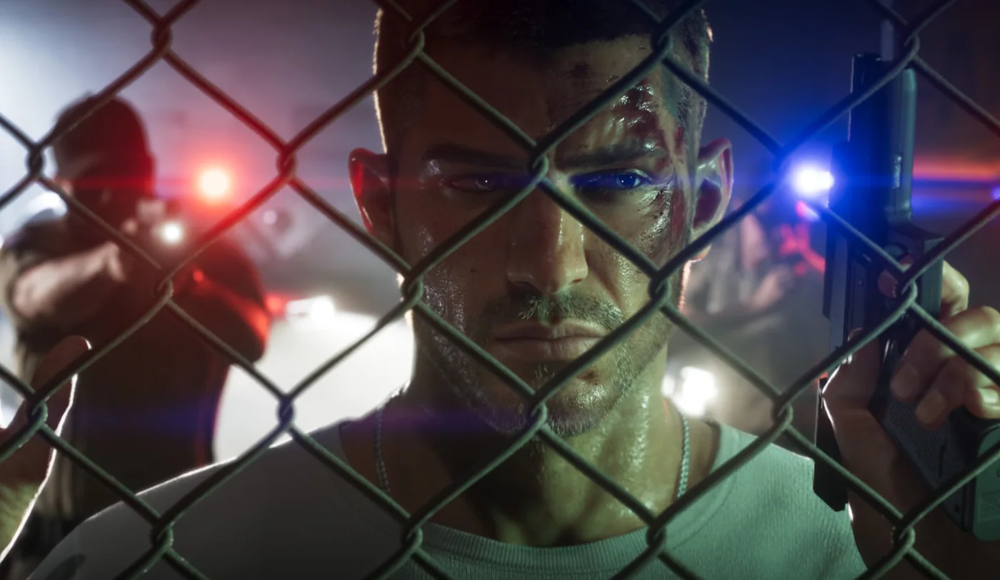
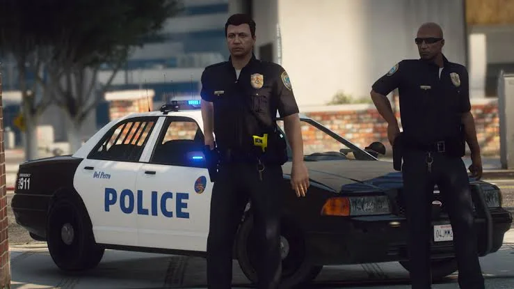
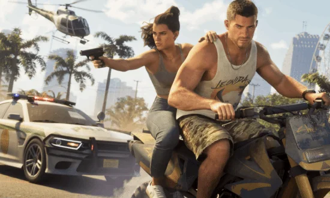
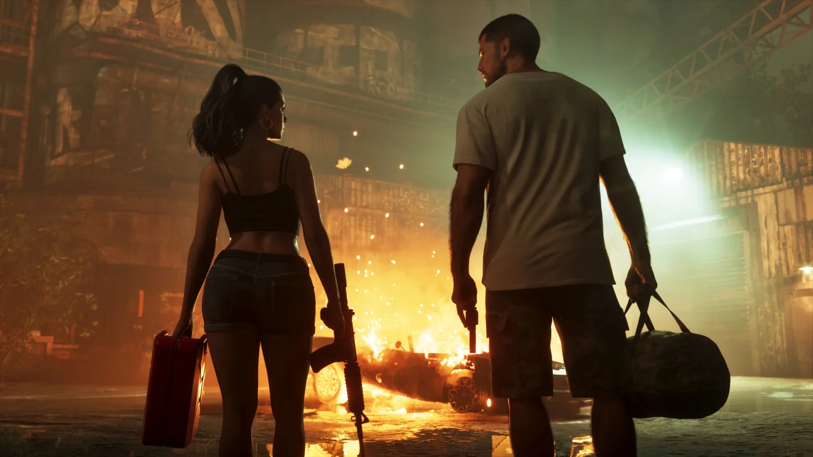

Guides · Systems
GTA6 Wanted Level Changes: A Full Evolution from Five Stars to Six
The GTA series’ wanted system is one of the mechanics players know best. From the early pixelated cop portraits to the classic star ratings, GTA5 capped the wanted level at five stars, and GTA6 makes the biggest change in years. According to Extended Look footage and interviews with Rockstar developers, the wanted level not only returns to six stars but also gets systematic upgrades to its trigger logic, identification, and escape strategy.

On this page

1. The Ceiling Returns to Six Stars
GTA5 dropped the maximum wanted level to five stars to match its title number, and GTA6 has clearly restored the six-star system. Chase footage in the Extended Look plainly shows two empty slots at four stars, confirming the ceiling is six.
Six stars means a higher tier of law enforcement response. The specific units, including whether the military gets involved, have not been fully detailed, but the return of the star count sends a signal on its own: the worst crimes will face heavier suppression than in previous games.
2. Crimes No Longer Automatically Trigger a Wanted Level
This is the most fundamental change. Rob Nelson, co-head of Rockstar North, put it plainly:
“In GTA6, the wanted system requires that someone witnesses the crime, or that an alarm is triggered, for it to be reported to the police.”
Unlike GTA5’s immediate “crime equals wanted level” logic, now:
- A crime with no witnesses, no cameras, and no alarm may not produce stars right away.
- Pedestrians, store clerks, and cameras become key variables.
- Players can prevent a wanted level from appearing by eliminating witnesses or destroying surveillance.
That change makes quiet crime genuinely possible and sharply raises the value of stealth and planning.

3. A New Heat Icon System
A row of heat icons now sits below the wanted stars, showing in real time what information the police hold. It is the first time the series has visualized what the police know:
| Icon Type | What It Represents | How to Clear It |
|---|---|---|
| Figure silhouette | Appearance description | Wear a mask, change hairstyle, wear a hat or glasses |
| Hanger | Current clothing | Change your full outfit |
| Vehicle | Vehicle being used | Switch, abandon, or burn the car |
| Pair silhouette | Committing crimes in a pair | Split up |
| Camera | Caught on surveillance | Destroy the relevant cameras or evidence |
| Weapon | Weapon type used | Drop or switch weapons |
The more icons, the easier it is for police to lock on to a target. Players have to actively manage that information instead of just breaking line of sight.
4. More Granular Star States
The wanted stars themselves change appearance depending on the situation:
- Hollow star: Police know a crime happened but have no specific description.
- Solid white star: Police have identified the target and have direct line of sight.
- Red or flashing star: Direct line of sight is lost, but you are still inside the search area.
That makes it clearer whether you are being chased or being searched, avoiding the murky feeling in previous games where the stars were still up but you had no idea whether the police were nearby.

5. Escape Logic Gets an Overhaul
The old “duck into an alley and wait for the stars to disappear” approach is much weaker now. The new system emphasizes actively clearing descriptor information:
- Changing clothes becomes a core tactic: Clothing is a key identifying factor. Trunks can hold spare outfits, and a quick change clears the “hanger” icon.
- Switching cars clears vehicle info: Ditching a flagged vehicle removes the vehicle icon outright.
- Splitting up lowers the risk: Committing crimes together as both protagonists triggers a “pair” icon, and separating can lower the wanted level or split police attention.
- Leaving the hot zone: Crime scenes create a localized heat area, and returning can re-trigger the wanted level.
At low star levels, a surrender option may also appear, letting you avoid going straight into a firefight.
6. More Realistic Police Response
- Police no longer spawn out of thin air next to the player; they are dispatched from nearby and actually drive to the scene.
- The minimap hides police positions by default. Sensing nearby law enforcement requires the “Focus” ability.
- Openly carrying a gun immediately draws the attention of pedestrians and police, adding further risk.
Key Differences from GTA5
| Change | GTA5 | GTA6 |
|---|---|---|
| Maximum wanted level | 5 stars | 6 stars |
| Crime trigger | Mostly automatic | Requires a witness or an alarm |
| Identification basis | Mainly position | Appearance, clothing, vehicle, surveillance, whether in a pair |
| Escape focus | Break line of sight | Clear descriptor info + break line of sight |
| Information display | None | Heat icons shown in real time |
| Minimap police display | Usually visible | Hidden by default, requires active sensing |

Design Intent
The new system turns crime and escape from a simple chase into a game of information management and disguise. Players have to think like an actual fugitive: Did anyone see me? Are there cameras? Have the clothes I am wearing and the car I am driving already been logged? Does moving as a pair add risk?
That closes a perfect loop with the clothing system, dual-protagonist switching, and the NPC reaction systems, giving every crime more weight and more strategic depth.
Summary
GTA6’s wanted level changes center on the return of six stars, witness-based triggers, heat icons, and descriptor tracking, completely rebuilding the series’ classic escape experience. Players no longer just “run fast enough and hide long enough”; they have to actively manage their criminal profile, using outfit changes, vehicle swaps, splitting up, and destroying evidence to bring the heat down step by step.
Those changes turn police pursuit from a predictable nuisance into core gameplay that genuinely tests the player’s wits and reflexes. When the game launches on November 19, 2026, every high-wanted-level chase across Leonida will be the most oppressive and the most strategically layered escape the series has delivered.
1. 最高等级回归六星
《GTA5》为配合标题数字将最高通缉降为五星，《GTA6》明确恢复了六星系统。Extended Look中的追逐场景清晰显示四星时仍有两颗空位，确认最高可达六星。
六星意味着更高等级的执法响应。虽然具体单位（是否包含军事介入）尚未完全公开，但星数的回归本身就释放出信号：最严重的犯罪将面对比前作更强烈的压制。
2. 犯罪不再自动触发通缉
这是最根本的改动。Rockstar North联合负责人Rob Nelson明确表示：
“《GTA6》的通缉系统要求有人目击犯罪，或者触发警报，犯罪才会被通报给警方。”
与《GTA5》中“犯罪即通缉”的即时逻辑不同，现在：
- 无人目击、无监控、无警报的犯罪可能不会立即产生星星。
- 路人、店员、摄像头成为关键变量。
- 玩家可通过消除目击者或破坏监控来避免通缉产生。
这一改变让“安静犯罪”真正成为可能，也大幅提升了潜行与规划的价值。
3. 新增热度图标系统
通缉星星下方新增一排热度图标（Heat Icons），实时显示警方已掌握的信息。这是系列首次将“警方知道什么”可视化：
| 图标类型 | 代表信息 | 清除方式 |
|---|---|---|
| 人物剪影 | 外貌描述 | 戴口罩、换发型、戴帽子/眼镜 |
| 衣架 | 当前服装 | 更换整套衣服 |
| 车辆 | 使用的车辆 | 换车、弃车或烧毁 |
| 双人剪影 | 成对作案 | 分头行动 |
| 摄像头 | 被监控拍到 | 破坏相关监控或证据 |
| 武器 | 使用的武器类型 | 丢弃或更换武器 |
图标越多，警方越容易锁定目标。玩家必须主动管理这些信息，而不是单纯甩掉视线。
4. 星星状态的细化
通缉星星本身也会根据情况改变外观：
- 空心星：警方知道发生了犯罪，但尚无具体描述。
- 实心白星：警方已锁定目标并有直接视线。
- 红星或闪烁星：已失去直接视线，但仍在搜索区域内。
这让玩家更清楚当前处于“被追”还是“被搜”状态，避免了前作中“星星还在但不知道警察是否还在附近”的模糊感。
5. 逃脱逻辑全面升级
传统“躲进巷子等星星消失”已大幅弱化。新系统强调主动清除描述信息：
- 换装成为核心策略：服装是识别关键要素。车辆后备箱可存放备用衣服，快速换装能清除“衣架”图标。
- 换车清除车辆信息：弃用被标记的车辆，可直接消除车辆图标。
- 分头行动降低风险：双主角一起作案会触发“双人”图标，分开后可降低通缉等级或分散注意力。
- 离开热区：犯罪现场会形成区域热度，返回可能重新触发通缉。
低星时还可能出现投降选项，避免直接进入枪战。
6. 警察响应更真实
- 警察不再凭空刷新在玩家身边，而是从附近派出并实际赶往现场。
- 小地图默认不显示警察位置，需使用“Focus”能力才能感知附近执法人员。
- 公开持枪会立刻引起路人与警察注意，进一步增加风险。
与GTA5的核心对比
| 改动项目 | GTA5 | GTA6 |
|---|---|---|
| 最高通缉等级 | 5星 | 6星 |
| 犯罪触发方式 | 基本自动 | 需目击或警报 |
| 识别依据 | 主要依赖位置 | 外貌、服装、车辆、监控、是否成对 |
| 逃脱重点 | 甩掉视线 | 清除描述信息 + 甩掉视线 |
| 信息可视化 | 无 | 热度图标实时显示 |
| 小地图警察显示 | 通常可见 | 默认隐藏，需主动感知 |
设计意图
新系统把“犯罪与逃亡”从简单的追逐游戏，升级为信息管理与伪装游戏。玩家必须像真正的逃犯一样思考：有没有人看见？有没有摄像头？我现在穿的衣服、开的车是否已被记录？双人行动是否会增加风险？
这与服装系统、双主角切换、NPC反应系统形成完美闭环，让每一次犯罪都更有重量，也更有策略深度。
总结
《GTA6》的通缉等级改动以六星回归、目击触发、热度图标和描述追踪为核心，彻底重构了系列经典的逃亡体验。玩家不再只是“跑得够快、躲得够久”，而是要主动管理自己的“犯罪档案”——通过换装、换车、分头行动和清除证据来逐步降低热度。
这些改动让警察追捕从“可预测的干扰”，变成真正考验玩家智慧与反应的核心玩法。2026年11月19日正式发售后，雷欧奈达州的每一次高通缉追逐，都将成为系列迄今最有压迫感、也最有策略深度的逃亡体验。